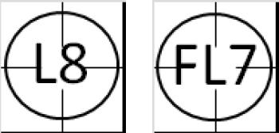
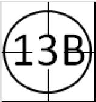

Retrait d’un batteur.
Un batteur peut être retiré sur les actions suivantes :
-
 Strike out [OBR 5.09(a)(2)]. Un ‘strike out’ survient quand
« Un troisième strike est régulièrement attrapé par le receveur ; ‘Régulièrement attrapé’ veut dire dans le gant du receveur avant que la balle ne touche le sol. »
Ceci est la forme la plus courante du ‘strike out’, et il doit être noté avec la lettre ‘K’ dans le cercle qui indique le retrait.
Strike out [OBR 5.09(a)(2)]. Un ‘strike out’ survient quand
« Un troisième strike est régulièrement attrapé par le receveur ; ‘Régulièrement attrapé’ veut dire dans le gant du receveur avant que la balle ne touche le sol. »
Ceci est la forme la plus courante du ‘strike out’, et il doit être noté avec la lettre ‘K’ dans le cercle qui indique le retrait.
-
Strike out [OBR 5.09(a)(2)]. Un ‘strike out’ survient quand
« Un troisième strike est régulièrement attrapé par le receveur ; ‘Régulièrement attrapé’ veut dire dans le gant du receveur avant que la balle ne touche le sol. »
Ceci est la forme la plus courante du ‘strike out’, et il doit être noté avec la lettre ‘K’ dans le cercle qui indique le retrait.
 Pour indiquer que le batteur
a tenter de frapper sur le troisième ‘strike’, ou que le troisième ‘strike’ a été appelé par l’arbitre (et que le batteur n’a pas tenter de frapper), on ajoute une autre lettre au ‘K’ pour apporter une précision au ‘Strike out’. C’est pour cette raison que l’on ne note pas un ‘K’ mais toujours un ‘KL’ ou ‘KS’.
Pour indiquer que le batteur
a tenter de frapper sur le troisième ‘strike’, ou que le troisième ‘strike’ a été appelé par l’arbitre (et que le batteur n’a pas tenter de frapper), on ajoute une autre lettre au ‘K’ pour apporter une précision au ‘Strike out’. C’est pour cette raison que l’on ne note pas un ‘K’ mais toujours un ‘KL’ ou ‘KS’.
Quand un batteur est retiré sur un ‘strike out’, le retrait doit être attribuer exclusivement au receveur.
Si le receveur, après avoir laissé tomber la balle sur un troisième ‘strike’, récupère la balle et touche le batteur-coureur avant que celui-ci ne touche la première base, on utilisera le symbole ‘KS2’ ou ‘KL2’.
En plus du retrait crédité au receveur, le ‘strike out’ doit être noté dans les statistiques offensive du batteur qui a été retiré, ainsi que dans les performances du lanceur qui a effectué ce ‘strike out’.
 Comme le ‘strike out’ est attribué comme un retrait pour le receveur, la notation « K.2 » est incorrect, à moins que le troisième ‘strike’ ne soit pas rattrapé par le receveur et qu’il a dû toucher le batteur pour effectuer le retrait.
Comme le ‘strike out’ est attribué comme un retrait pour le receveur, la notation « K.2 » est incorrect, à moins que le troisième ‘strike’ ne soit pas rattrapé par le receveur et qu’il a dû toucher le batteur pour effectuer le retrait.
NOTE :
Si l’arbitre appel un ‘Strike 3’, alors que le receveur à relâcher la balle, et que la première base est libre, ou occupée avec déjà deux retraits, un ‘strike out’ est crédité au lanceur et contre le batteur même si le batteur devient coureur ou est retirer.
 Si la première base est libre, ou qu’il y a déjà deux retraits, le batteur peut tenter d’avancer. Si le receveur récupère la balle et relance la balle au défenseur de la première base en anticipant l’arrivée du batteur-coureur, le retrait doit être noté avec un ‘KS23’ ou ‘KL23’, ce qui donne une assistance au receveur, un retrait au défenseur de la première base et un ‘strike out’ pour le lanceur.
Si la première base est libre, ou qu’il y a déjà deux retraits, le batteur peut tenter d’avancer. Si le receveur récupère la balle et relance la balle au défenseur de la première base en anticipant l’arrivée du batteur-coureur, le retrait doit être noté avec un ‘KS23’ ou ‘KL23’, ce qui donne une assistance au receveur, un retrait au défenseur de la première base et un ‘strike out’ pour le lanceur.
Dans l’objectif de pouvoir indiquer immédiatement le nombre de ‘strike out’ effectué par le lanceur, le nombre de ‘strike out’ effectué par le lanceur est noté en bas à droite du cercle signifiant le retrait. Le comptage redémarre à chaque changement de lanceur.
NB : Un ‘strike out’ ne doit pas être confondu avec un autre retrait. A chaque fois qu’un ‘strike out’ est effectué, indépendamment du retrait, il doit être crédité au lanceur qui l’a réalisé. La défense ne peut être crédité d’un retrait lors d’un ‘strike out’ uniquement lorsque le retrait est effectué quand le batteur est devenu batteur-coureur. Dans la majorité des cas, notés comme un ‘KS1’ ou ‘KL1’ dans le premier exemple, le ‘strike out’ est attribué au lanceur et au batteur et un retrait est attribué au receveur.
-
 Retrait sur une ‘Fly’ (Une balle frappée qui parcours une trajectoire haute dans les airs)
[OBR 5.09(a)(1)]
. Un batteur est retiré quand ;
« Son ‘fly’, en territoire des bonnes ou fausses balles (autre qu’un ricochet), est régulièrement attrapé par un défenseur »
. Cette action est notée avec un ‘F’ (le numéro représente le défenseur qui a fait le retrait) si la balle est dans la zone des bonnes balles, ou ‘FF’ si la balle a été attrapée dans la zone des fausses balles.
Les coureurs sur base peuvent tenté d’avancer en quittant leur base après que la balle soit touchée par un défenseur. Les deux exemple montre un ‘fly’ attrapé par le champs centre et un ‘fly dans la zone des fausse balle attrapé par le receveur.
Retrait sur une ‘Fly’ (Une balle frappée qui parcours une trajectoire haute dans les airs)
[OBR 5.09(a)(1)]
. Un batteur est retiré quand ;
« Son ‘fly’, en territoire des bonnes ou fausses balles (autre qu’un ricochet), est régulièrement attrapé par un défenseur »
. Cette action est notée avec un ‘F’ (le numéro représente le défenseur qui a fait le retrait) si la balle est dans la zone des bonnes balles, ou ‘FF’ si la balle a été attrapée dans la zone des fausses balles.
Les coureurs sur base peuvent tenté d’avancer en quittant leur base après que la balle soit touchée par un défenseur. Les deux exemple montre un ‘fly’ attrapé par le champs centre et un ‘fly dans la zone des fausse balle attrapé par le receveur.

 Si une ‘line drive’ (une balle frappée qui va directement et rapidement de la batte à un défenseur sans toucher le sol) est attrapé par un défenseur, cette action est notée avec le symbole ‘L’ (le numéro représente le défenseur qui a fait le retrait) quand la balle est attrapée dans la zone des bonnes balles, ou avec ‘FL’ quand est attrapée dans la zone des fausses balles.
Les exemples qui sont donnés ici montre une ‘line drive’ rattrapé par le lanceur et le champs centre, puis une ‘line drive’ rattrapée dans la zone des fausses balles par le défenseur de la première base et le champ gauche. Quand une balle est frappée dans le champs extérieur et n’a pas une trajectoire haute dans les airs et qui est rattrapé de volée sans toucher terre, on considère que ce n’est pas un ‘fly’ et on doit toujours noter cette action avec un ‘L’ ou ‘FL’ si c’est dans le territoire des fausses balles.
Si une ‘line drive’ (une balle frappée qui va directement et rapidement de la batte à un défenseur sans toucher le sol) est attrapé par un défenseur, cette action est notée avec le symbole ‘L’ (le numéro représente le défenseur qui a fait le retrait) quand la balle est attrapée dans la zone des bonnes balles, ou avec ‘FL’ quand est attrapée dans la zone des fausses balles.
Les exemples qui sont donnés ici montre une ‘line drive’ rattrapé par le lanceur et le champs centre, puis une ‘line drive’ rattrapée dans la zone des fausses balles par le défenseur de la première base et le champ gauche. Quand une balle est frappée dans le champs extérieur et n’a pas une trajectoire haute dans les airs et qui est rattrapé de volée sans toucher terre, on considère que ce n’est pas un ‘fly’ et on doit toujours noter cette action avec un ‘L’ ou ‘FL’ si c’est dans le territoire des fausses balles.
 Une ‘Pop fly’ ou ‘pop-up’ est une sorte de ‘Fly’ qui monte très haut dans les airs mais qui se déplace peu dans le terrain. Pour un défenseur, c’est une balle qui semble tomber verticalement. On utiliser un ‘P’ quand une ‘Pop fly’ est attrapée par un défenseur (le numéro représentant le défenseur qui a fait le retrait) dans la zone des bonne balles ou ‘FP’ si elle est attrapée dans la zone des fausses balles. L’exemple ci-contre montre une ‘pop fly’ attrapée par le défenseur de deuxième base en territoire des bonnes bases et une ‘pop fly’ attrapé par le défenseur de la troisième base en territoire des fausses balles.
Une ‘Pop fly’ ou ‘pop-up’ est une sorte de ‘Fly’ qui monte très haut dans les airs mais qui se déplace peu dans le terrain. Pour un défenseur, c’est une balle qui semble tomber verticalement. On utiliser un ‘P’ quand une ‘Pop fly’ est attrapée par un défenseur (le numéro représentant le défenseur qui a fait le retrait) dans la zone des bonne balles ou ‘FP’ si elle est attrapée dans la zone des fausses balles. L’exemple ci-contre montre une ‘pop fly’ attrapée par le défenseur de deuxième base en territoire des bonnes bases et une ‘pop fly’ attrapé par le défenseur de la troisième base en territoire des fausses balles.
-
 Retrait sur une balle frappée au sol (une balle frappé qui roule ou touche le sol dans le terrain)
[OBR 5.09(a)(10)]
. Un frappeur est retiré quand
« Après un troisième strike ou après avoir frappé une bonne balle, il est touché ou la première base
est touchée par un défenseur en possession de la balle, avant qu’il ne touche lui-même la première
base »
.
Dans cet exemple, le coureur-batteur est retiré après sa frappe au sol soit rattrapé par le défenseur de la troisième base qui fait le relais au défenseur de la première base qui effectué le retrait.
Retrait sur une balle frappée au sol (une balle frappé qui roule ou touche le sol dans le terrain)
[OBR 5.09(a)(10)]
. Un frappeur est retiré quand
« Après un troisième strike ou après avoir frappé une bonne balle, il est touché ou la première base
est touchée par un défenseur en possession de la balle, avant qu’il ne touche lui-même la première
base »
.
Dans cet exemple, le coureur-batteur est retiré après sa frappe au sol soit rattrapé par le défenseur de la troisième base qui fait le relais au défenseur de la première base qui effectué le retrait.
 Quand une balle frappée au sol est attrapée par le défenseur de la première base, et que ce défenseur touche sa base avant que le batteur-coureur ne puisse atteindre cette base, on accorde un retrait sans assistance et l’on note cette action comme l’exemple ci-contre.
Quand une balle frappée au sol est attrapée par le défenseur de la première base, et que ce défenseur touche sa base avant que le batteur-coureur ne puisse atteindre cette base, on accorde un retrait sans assistance et l’on note cette action comme l’exemple ci-contre.

Quand un batteur frappe un amorti ou ‘bunt’ (
Balle frappée sans élan, la batte rencontrant intentionnellement la balle et l’envoyant lentement dans le champ intérieur
) et est retiré suite à cette frappe, et que cet amorti ne peut être considéré comme un sacrifice, on note cette action avec un ‘B’. L’exemple ci-contre montre une frappe de type ‘bunt’ qui a été rattrapé par le lanceur qui a relayé la balle au défenseur de la première base qui a fait le retrait.